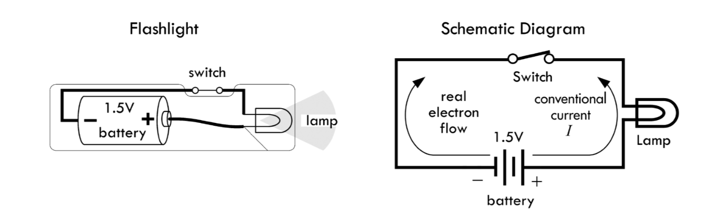
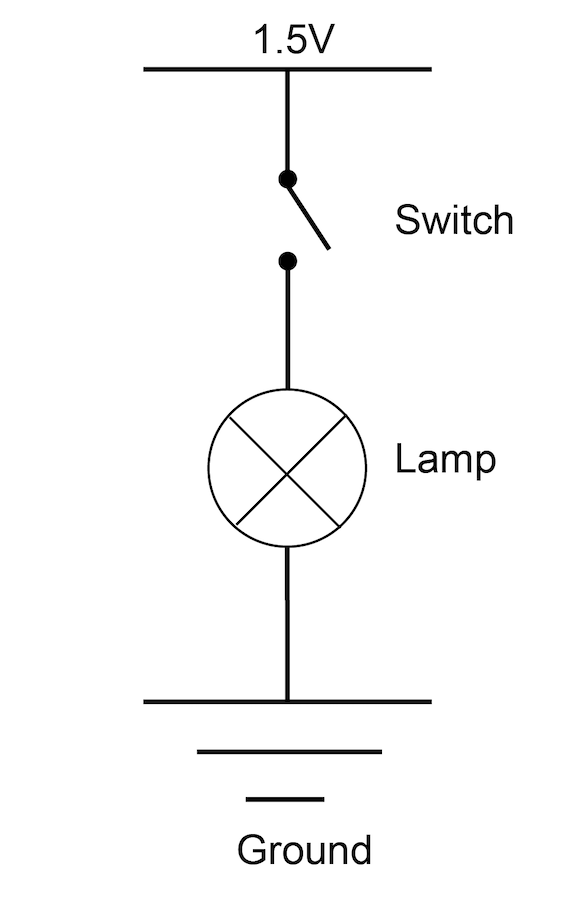
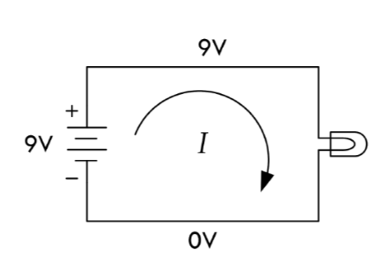
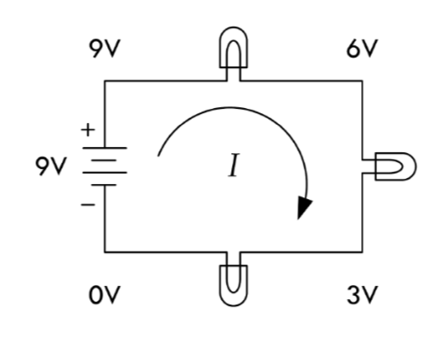
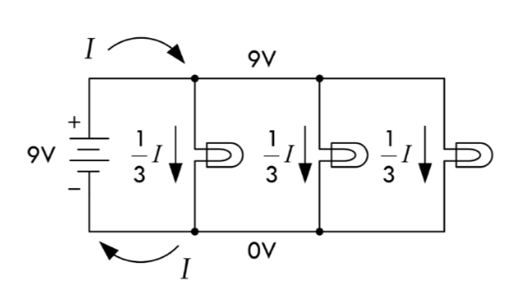
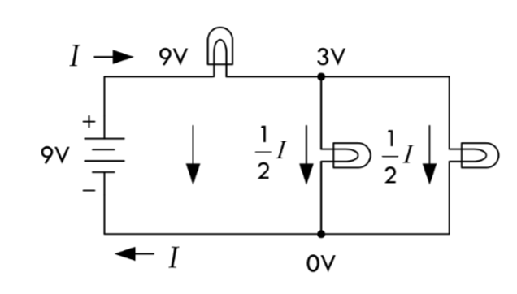

Electricity: Electron flow through a conductive material. Electrons will flow through the path of least resistance.
Circuit: When a power source (let's say a battery) is connected to components that turn electrical energy into some other kind of energy.
Load: The component/s that are doing the work on a circuit.
Ground: The place on a circuit with the lowest potential energy. Sometimes this is the actual ground, but other times it is the grounded part of a circuit. In a circuit, electricity flows from the power source to ground.
Short Circuit: When power and ground connect directly to each other without a load or bypassing a load, the power source overheats.
Voltage: A measure of the potential energy difference between two points on a circuit. Units are Volts (V).
Current: A measure of the magnitude of electron flow at a particular point in a circuit. Units are amperes, or, amps.
Resistance: A measure of materials ability to resist the flow of electrons. Units are ohms.
Do not: connect + and - terminals directly to each other (i.e. Short circut).
Do: connect components that use all your voltage (resistors, LEDs, Motors, etc). The voltage requirements of your components should add up to the amount of voltage provided. If your components draw less voltage, they will overheat. If they draw too much voltage, your components might not work (or be dim, slow, etc. depending).
Circuits must be closed in order for electricity to flow.
Switches control the opening and closing of your circuit.
Conductor: Material that allow for free flow of electrons.
Insulator: Material that prevents the flow of electricity.
Resistor: Materials that resists the flow of electricity.
Transducer: A component that converts one kind of energy into another kind of energy. Sensors convert some kind of energy (mechanical, temperature, light, etc.) into electricity, which can be read as a signal. Actuators convert electrical energy into some other energy (heat, light, movement, etc.)
Switch: A conductor that acts as a mechanical connector/disconnector in a circuit.
Diode: Allow electricity to flow in one direction but not another direction. Diodes are one kind of polarized component, which means they can only be connected in a circuit in one direction.
LED: Light Emitting Diodes emit light, and are polarized like all diodes.
Capacitor: Store electrical energy while it's being provided, and then release it when it stops. Decoupling capacitors are capacitors used to to smooth electricity flow in a circuit. Capacitors can be polarized or unpolarized.
Wire: A conductive material wrapped in an insulated material used to connect components. They can generally be thought of as having zero resistance.
Solderless breadboard: An resuable prototyping material that allows you to create easy electrical connections.
Battery holder: Connect to the positive and negative poles of a battery for easy connection to your circuit.
Schematic diagrams show the electrical relationship of components in a circuit. They do not (generally) show the spatial relationship of components.
Components have corresponding symbols, which is how they are represented in schematics.
Practical Electronics for Inventors p.10
Below is the same schematic drawn differently:
Basic Circuit:
Series Circuit: In a series circuit, energy flows from one component to the next component. Components draw voltage, and the voltage drops. The amount of current going into any component is the same as the current coming out.
Parallel Circuit: Components are in parellel when energy flows through them at the same time. Voltage across components wired this way is the same, but the current is divided between them.
Combined Series & Parallel Circuit:
Practical Electronics for Inventors p.49-50
"Ohm's Law" refers to the relationship Georg Simon Ohm observed regarding the behavior of materials: that there is a linear relationship between how much current flows through material when voltage is applied across it. It is defined as:
R = V/I where R is Resistance (Ohms); V is Voltage (Volts); I is Current (Amps)
For circuit analysis you can predict what voltage must exist across a known resistance and measured current using V=IR and similarly predice amperage across a known resistance and measured voltage using I=V/R.